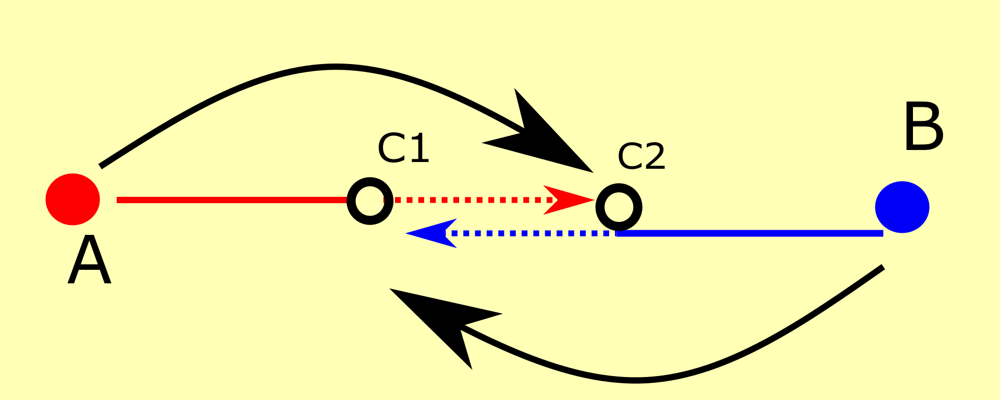
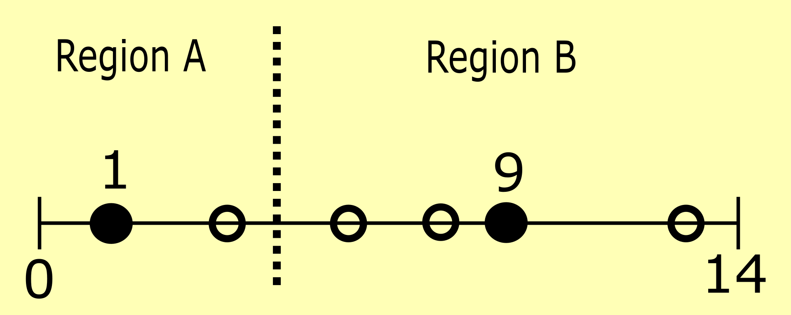
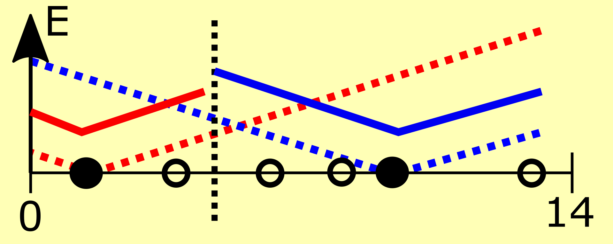
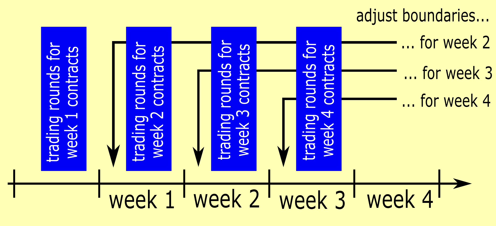

The game is a simplified version of the Oxandel Market place using a selfregulating* contract.
The structure of the contract is chosen to suppress needless freight, depicted in figure 1.

Fig. 1: If producer A sells to consumer C2 and producer B sells to consumer C1,
there can be unnecessary freight (dotted lines), if no further action is taken. The selfregulating contract
helps avoiding these situations by its dynamic pricing structure.
2. Gameplay
In this game, every player is getting assigned responsible to facilities.
Each of the facilities is located at a point on a line. The line begins at 0 and has a finite length - sometimes called "Linear City".
There are production and consumption facilities, each producing or consuming 1 unit of a commodity per week. Figure 2 shows an example.
The players can trade their commodity units, with delivery for a given week, among each other within a number of Trading Rounds before that week.
They have to use public dynamic contracts, described below. "Trading" means negotiating the Base Price P of such contracts. Because all trade the same type of contract, a purchase and a sale can be netted against each other, like with financial contracts on an exchange.

Fig. 2: Example for Linear City of length 14, Production facilities are at 1 and 9, consumption sites at 3,6,8,13; all players know where facilities are located, but not how many of them
2.1. The Dynamic Contract
Each dynamic contract is referring to a Region and a week. Each Region is a range in the Linear City and has a center, e.g. range 0 to 3.5 with
center at 1. A center is typically the location of a production facility in that Region.
The buyer of the dynamic contract has the right (and obligation) to decide after all trading rounds for a week, to which of his consumption site inside of the Region he wants the commodity to be transported to*. Thus the seller knows at time of sale not yet, where in the Region he has to bring the material to, if there is more than one consumption site in the region. But once he knows the location, he can decide from which production or purchase he is going to supply**. The software of the game is making these decisions ('Nominations') for each player automatic to maximize its individual profit.
The buyer will have to pay after the Nomination to location X to the seller the
delivery price E= P + |X-C|
with P as the base price he purchased for, C is the center of the region. Production Costs at a facility are 0.
But producers have to pay a freight of 1 per commodity and per distance unit to the location they bring material to (see Fig. 3).

Fig. 3: the dotted lines show the cost a producer has to transport material to a location; the bold lines are examples
for the final contractual delivery prices.
Example:
Contract for Region B with C=9 got purchased for P=3. If it gets nominated to X=6, the buyer will have to pay 3+|6-9|=6. If the seller is supplying that sale with production from his site at location 1, he will have costs |6-1|=5.
* he can also forward it to one of his sales (see 3.1)
** or by import from outside of the Linear City (see 3.2)
2.2 Who wins ?
The winner is chosen by two criteria:
a Group Valuation
its Individual player profit
The winner will be the player from the group with the highest valuation, who has the most individual points.
The Group Valuation is determined by the total transport distance used to bring productions to consumptions, thus in units of length.
The smaller the distance, the higher is the valuation.
The Individual profit is calculated in money units: Buying low, selling high and reducing freight costs (as producer) is
the way to get high individual profit.
3.1 Technical Detail (1): Chains & Circles
Nominations can be done not only to consumption facilities, but also to sold contracts. If that happens several times in a row, this can create chains
of nominations. If the last in the chain is a consumption facility, all contracts in the chain get nominated to the location of that final facility.
If the chain meets itself, thus forms a 'circle' (e.g. A sells to B, B sells to C, C sells to A), the nomination will be to the center of the region, no transport takes place, but there is likely exchange of money units among the players.
3.2. Technical Detail (2): Import & Export
If a player has after all rounds for a week still a surplus of commodity, e.g. because of too many purchases or unsold production, he
has to export it (out of the Linear City). Export will give the player a price of 0.
Accordingly will a player who is physically short before the week starts, have to import.
The cost of Imports is 100 per commodity unit, including freight.
To maximize their individual profit, all players are offered an incentive to trade with each other rather then to make use of their import and export
possibilities.
3.3. Technical Detail (3): Auction Rules in Trading Rounds
In each Trading Round every player can place a number of orders for each type of contract.
A bid, which is equal or higher than an offer, will be matched with it and the average of their prices. More aggressive orders (e.g. lower offers) are matched preferably.
Orders, which are not matched in one round will be visible to everybody in the next round and can then be matched.
If they are afterwards still unmatched, they disappear. So every order has a lifetime of maximal 2 rounds, including the round it was placed in.
Trading rounds are limited in time, e.g to 20 seconds.
4. Why is it called "selfregulating" ?
The boundaries of the regions for delivery in a certain week will be adjusted after the last trading round for the previous week (Fig. 4). Relevant for the adjustment is the typical delivery price E close to the boundaries: Cheaper regions will grow as expensive ones shrink. This can be done by someone, who just observes the traded market prices, or a public algorithm - therefore it is called "selfregulation". Here it is done by the operator.
Example:
the prices at the boundary of Region A to B were EA < EB, the boundary will be shifted towards the center of B in the next round

Fig. 4: the region boundaries are regularly updated